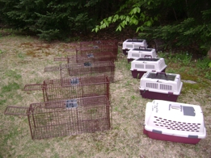

|
|
|
(CAPTURE - STÉRILISE - RELÂCHE - MAINTIEN) |
||||||
| Ce service s'adresse aux citoyens qui offrent leurs secours aux chats errants de leur voisinage. Les Anges des Chats sont là pour vous aider à les capturer, les faire stériliser, leur offrir une période de convalescence de 2 à 10 jours et les remettre en liberté dans leurs lieux d’origine – aux bons soins de leurs anges gardiens. | ||||||
D'où viennent les chats errants :
|
||||||

Impliquée depuis plusieurs années dans la stérilisation des chats errants, l’Hôpital vétérinaire de Piedmont collabore étroitement avec Les Anges des chats. |
|
||||||||
Les Anges des Chats sont là pour vous aider, avec leur expertise, leurs conseils pratiques et leur matériel adapté, à stabiliser votre colonie de chats communautaires dits « errants » en stoppant leur prolifération. |
 |
Une vidéo Youtube est disponible pour vous montrer comment le programme CSR est mis en place dans un secteur
Les Avantages de la Stérilisation
En plus de stopper les portées non-désirées, le marquage par l'urine et l’agressivité entre mâles, les chats stérilisés protègent leur territoire contre l'invasion d'autres colonies de chats

Pour plus d'informations Contactez-nous: (450) 227-6484 |
|
À l’exemple de plusieurs grandes villes américaines et canadiennes, maintes municipalités des Laurentides ont déjà compris l’urgence d’agir ainsi que d’informer leurs citoyens sur l’importance de la stérilisation féline dont : Piedmont, Morin-Heights et Saint-Sauveur de la MRC des Pays-d'en-Haut, Prévost, Val-Morin, Val-David (La Chance aux Chats), Ste-Agathe, Ste-Lucie, Ste-Sophie, St-Jérôme, Lanthier, Boisbriand et SteThérèse.